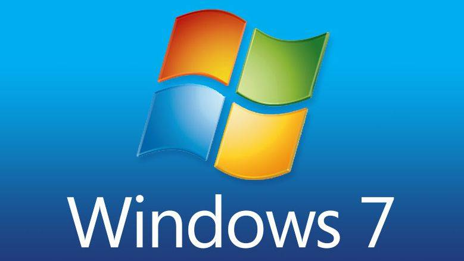

Si quieres ejecutar Windows 7 en tu PC, te indicamos aquí lo que supone:
Procesador a 1 gigahercio (GHz) o más rápido de 32 bits (x86) o de 64 bits (x64)*
1 GB de RAM (32 bits) o 2 GB de RAM (64 bits)
16 GB de espacio disponible en el disco duro (32 bits) o 20 GB (64 bits)
Tarjeta gráfica DirectX 9 con controlador WDDM 1.0 o superior

Requisitos adicionales para usar algunas características:
Acceso a Internet (pueden aplicarse tarifas adicionales)
Según la resolución, la reproducción de vídeo podría requerir memoria adicional y hardware gráfico avanzado
Es posible que algunos juegos y programas requieran tarjetas gráficas compatibles con DirectX 10 o superior para ofrecer un rendimiento óptimo.
Algunas funciones de Windows Media Center pueden requerir un sintonizador de TV y hardware adicional
Los equipos Windows Touch y Tablet PC requieren hardware específico
Grupo hogar requiere una red y PC con Windows 7
La creación de DVDs o CDs requiere una unidad óptica compatible
BitLocker requiere Módulo de plataforma segura (TPM) 1.2
BitLocker To Go requiere una unidad flash USB
Windows XP Mode requiere un 1 GB de RAM adicional y 15 GB adicionales de espacio en disco duro disponible.
La música y el sonido requieren salida de audio
Los gráficos y la funcionalidad del producto pueden variar en función de la configuración del sistema. Algunas características pueden requerir hardware avanzado o adicional
COPIA DE SEGURIDAD EN WINDOWS
Para realizar una copia de seguridad manual de sus archivos en una ubicación de red o en un medio extraíble con un equipo que ejecuta Windows 7, Windows Vista, Windows XP o Windows Server 2003, siga estos pasos:
Haga clic en Inicio y Equipo; después, haga doble clic en la unidad donde tenga instalado Windows 7, Windows Vista, Windows XP o Windows Server 2003.
Abra la carpeta Usuarios y, después, la carpeta de usuario que contenga los archivos de los que desea realizar una copia de seguridad.
Copie las carpetas necesarias de la carpeta de usuario en una ubicación de red o medio extraíble.
Notas
Para realizar una copia de seguridad de datos de todos los usuarios, repita los pasos 2 y 3.
Para determinar el tamaño de todos los archivos de la carpeta del usuario, seleccione todas las carpetas, haga clic con el botón secundario en las seleccionadas y haga clic en Propiedades.
Los archivos guardados se pueden copiar en cualquier equipo. Sin embargo, debe tener instaladas en el equipo las aplicaciones correspondientes para abrir cada archivo.
No todas las aplicaciones guardan sus archivos en la carpeta del usuario. Debe comprobar esas aplicaciones, determinar la ubicación donde guardan los archivos de forma predeterminada y copiar esos archivos en la ubicación de red o en el medio extraíble.